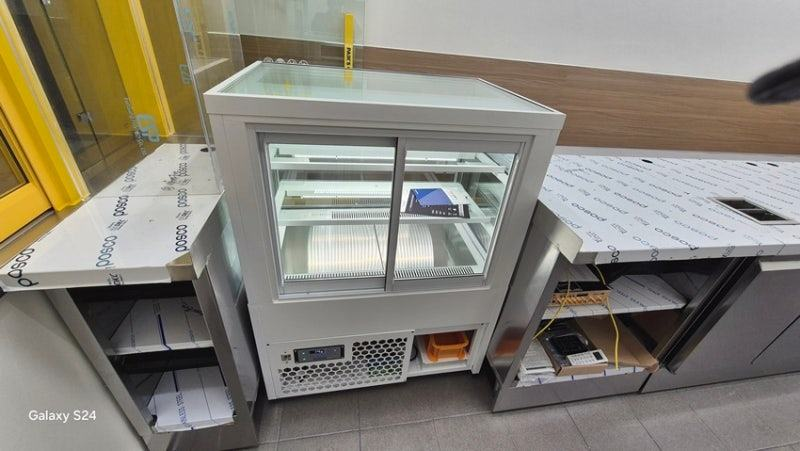
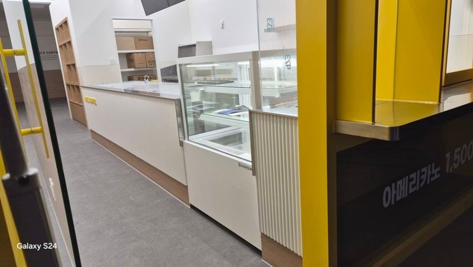
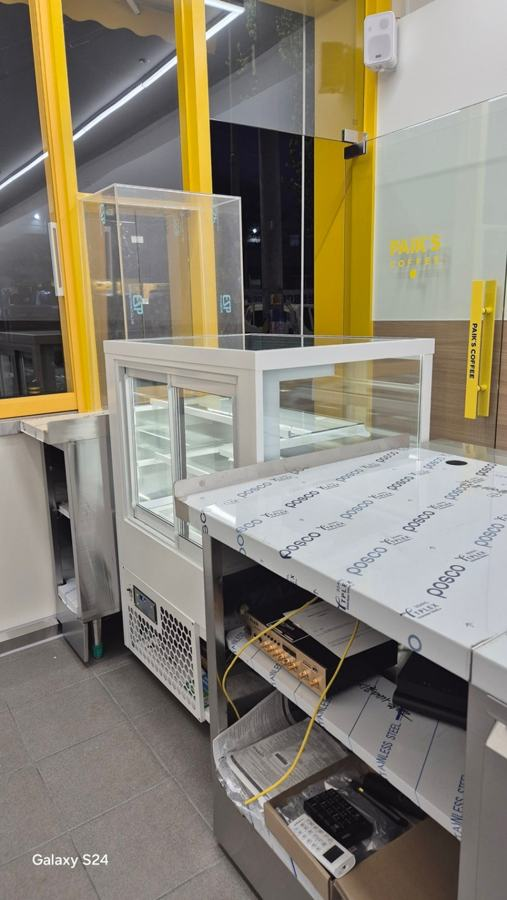
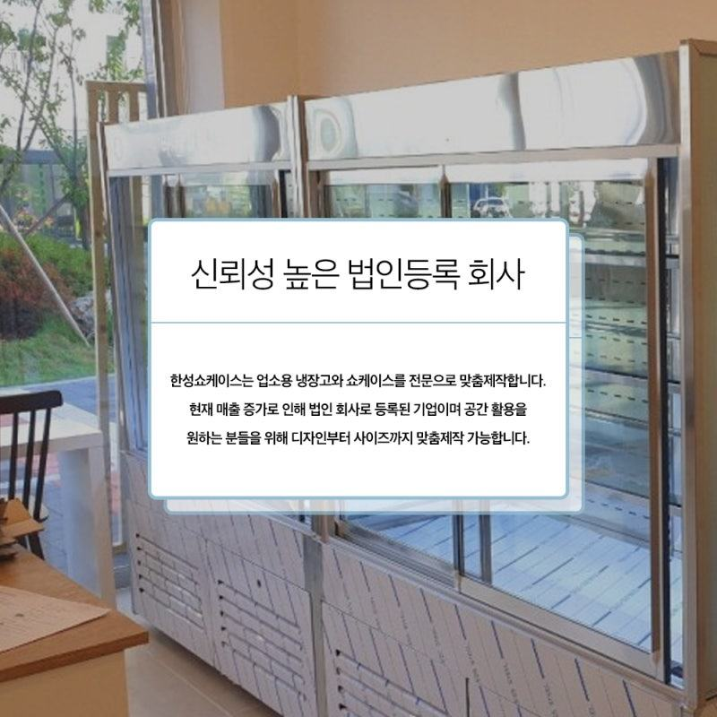

한성제품
냉장쇼케이스 추천, 업종별로 먼저 정할 다섯 가지

냉장쇼케이스는 어떤 제품이 좋다기보다 무엇을 진열하는지, 손님이 직접 꺼내는지, 어디에 놓는지에 따라 맞는 형태가 달라집니다. 이 세 가지를 먼저 정하고 조명과 관리 편의성을 더해 고르면 추천받은 제품이 매장과 어긋날 일이 줄어듭니다.
안녕하세요. 업소용 냉장 진열장을 매장 크기에 맞춰 만드는 한성쇼케이스입니다.
"그래서 어떤 냉장쇼케이스가 제일 좋아요?" 상담 전화에서 가장 자주 듣는 질문입니다. 솔직히 말씀드리면 이 질문에는 한 가지 답이 없습니다.
음료를 파는 편의점과 케이크를 파는 카페, 반찬을 파는 가게는 필요한 쇼케이스가 전혀 다르기 때문이죠.
그래서 추천을 받기 전에 사장님이 먼저 정리해 두시면 좋은 질문들이 있습니다. 이것만 정해져 있어도 상담 시간이 짧아지고, 들어온 뒤에 후회할 일이 줄어듭니다.
오늘은 냉장쇼케이스를 고를 때 순서대로 정해야 할 다섯 가지를 업종별 예와 함께 정리해 드리겠습니다.
1. 무엇을 진열하는지부터
병·캔 음료는 세워서 많이 넣는 게 중요하니 단 수와 선반 하중이 기준이 됩니다. 케이크나 디저트는 높이가 제각각이라 단 높이를 조절할 수 있어야 하고, 반찬이나 샐러드는 용기 크기에 맞춘 깊이가 필요합니다.
진열할 상품을 실제 용기째 몇 개 놓아 보고 높이와 폭을 재 두시면 쇼케이스 내부 구성이 거의 정해집니다.
- 주력 상품 3가지의 높이와 폭을 재 두세요.
- 하루에 채워 넣는 양을 대략 적어 두세요.
2. 손님이 꺼내는지, 직원이 꺼내는지
편의점이나 무인 매장처럼 손님이 직접 꺼내는 곳은 앞문형이나 오픈형이 맞습니다. 카페 케이크 진열장처럼 직원이 꺼내 주는 곳은 뒷문형이 위생과 동선 모두에 유리합니다.
문 구조는 설치 후에 바꾸기 어려운 부분이라 가장 신중하게 정하셔야 합니다. 손님 동선과 직원 동선이 어디서 겹치는지 매장 평면도에 그려 보시면 판단이 쉬워집니다.


3. 설치 자리와 크기
같은 냉장쇼케이스라도 벽에 붙이는지, 매장 한가운데 섬처럼 두는지, 계산대와 붙이는지에 따라 적합한 형태가 다릅니다.
기성품은 정해진 규격 중에 골라야 해서 자리에 맞지 않으면 틈이 남거나 통로가 좁아집니다.
1인 창업처럼 매장이 작다면 규격을 맞춰 제작하는 쪽이 공간을 더 알뜰하게 쓸 수 있습니다. 출입문 폭과 반입 경로도 이 단계에서 같이 확인해 두세요.
- 설치 자리 폭·깊이와 출입문 폭을 재 두세요.
- 기계 열이 빠질 여유 공간을 남겨 두세요.
4. 조명과 조작 편의
쇼케이스는 상품을 보관하는 동시에 손님 눈을 끄는 장비입니다. 같은 상품도 조명 색과 밝기에 따라 신선해 보이기도, 밋밋해 보이기도 합니다.
진열 상품에 어울리는 조명 색을 고르고, 밝기를 조절할 수 있는지 확인해 보세요.
온도와 조명을 조작하는 장치가 직관적인지도 중요합니다. 아르바이트생이 혼자 마감하는 매장이라면 버튼 몇 번으로 설정이 끝나는 편이 실수를 줄입니다.
5. 관리와 A/S
쇼케이스는 하루 종일 쉬지 않고 돌아가는 장비라 언젠가는 손볼 일이 생깁니다. 구매 전에 A/S를 어디서 받는지, 지방이라면 가까운 곳에 센터가 있는지 확인해 두세요.
한성쇼케이스는 전국 240여 개 A/S 센터를 운영하고 있습니다.
평소 관리가 쉬운 구조인지도 함께 보세요. 선반과 받침을 손으로 쉽게 빼서 닦을 수 있는지, 기계실 먼지망에 손이 닿는지에 따라 매일 청소에 드는 시간이 달라지고, 그 차이가 결국 고장 빈도로 이어집니다.
체크리스트
- 주력 상품 높이·폭과 하루 진열량
- 앞문형·뒷문형·오픈형 중 문 구조
- 설치 자리 치수와 반입 경로
- 상품에 맞는 조명 색과 밝기 조절
- A/S 접수처와 가까운 센터
현장에서 자주 보는 경우: 기성품 중에 고르다 맞춤으로 바꾸는 매장
식당, 카페, 편의점 사장님들과 상담하다 보면 정해진 제품 목록에서 고르려다 결정을 못 하시는 경우가 많습니다.
매장 분위기와 크기, 인테리어가 모두 달라서 딱 맞는 제품이 없기 때문입니다. 이럴 때는 매장에 맞춰 디자인과 크기를 잡는 맞춤 제작으로 방향을 바꾸시곤 합니다.
이런 매장은 자체 공장에서 제작한 뒤 사장님이 원하시는 날짜와 위치에 맞춰 배송·설치까지 이어서 진행했습니다.
상품을 신선하게 지키는 온도 조절 장치와 상품을 돋보이게 하는 조명 조절 장치를 달고, 누구나 쉽게 다룰 수 있도록 조작부를 단순하게 구성했습니다.




자주 묻는 질문
아직 크기와 디자인을 못 정했는데 상담이 가능한가요?
가능합니다. 진열할 상품과 매장 사진, 대략적인 치수만 알려 주셔도 맞는 형태를 함께 정해 드립니다.
기성품과 맞춤 제작 중 무엇을 추천하시나요?
설치 자리가 기성 규격과 잘 맞고 진열 상품이 표준적이라면 기성품도 괜찮습니다. 자리가 애매하거나 인테리어와 맞춰야 한다면 맞춤 제작이 공간을 더 잘 씁니다.
설치 후 고장 나면 어떻게 하나요?
대표전화 031-986-2458로 접수하시면 됩니다. A/S 기간 안이라면 기간에 맞춰 서비스를 받으실 수 있고, 급한 수리도 바로 접수해 드립니다.
매장 조건에 맞춰 만드는 한성쇼케이스
원하시는 제품 사진과 설치할 공간 사진만 보내 주셔도 매장에 맞는 구성을 추천해 드립니다.
- 전국 240여 개 A/S 전담 센터 운영
- 본사 대량 자재 매입으로 품질 대비 합리적인 가격
- 유럽제·삼성 냉각 콤프레셔 적용
- 국내 최초 쇼케이스 전문 디자이너 상주
매장 폭과 원하는 진열 구성을 알려 주세요. 실측과 견적을 안내해 드립니다.
031-986-2458